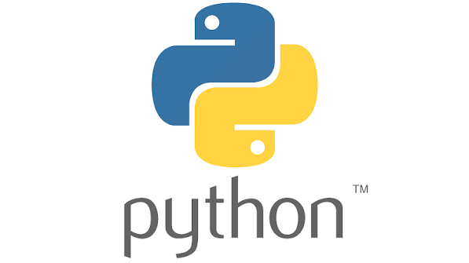

Python is an excellent programming language for beginners because it reads like simple English.It is a powerful, general-purpose language used for everything from building websites to training artificial intelligence. Its primary goal is to let you write clear, logical code for both small and large-scale projects.Why Learn Python?Easy to Read: Uses clean, minimalist syntax instead of complex symbols.Highly Versatile: Powers data science, web apps, automation, and game development.Massive Community: Offers millions of free tutorials, libraries, and forums for help.Great Career Value: Remains one of the most in-demand skills for tech jobs globally
Python is a high-level, interpreted, general-purpose programming language celebrated for its code readability, simplicity, and immense versatility. Created by Guido van Rossum and first released in 1991, its name actually derives from the British comedy group Monty Python. It uses an English-like syntax and strict indentation to structure code, dramatically minimizing the amount of code needed compared to languages like Java or C++.Core FeaturesInterpreted Nature: Code executes line-by-line via the Python Interpreter without requiring complex compilation steps, allowing for rapid debugging and prototyping.Dynamically Typed: Variable types do not need explicit declaration; the system assigns them at runtime based on the value provided.Multi-Paradigm: Developers can program using object-oriented, procedural, or functional programming principles.Batteries Included: Features an expansive standard library that provides built-in tools for handling files, math calculations, and networking.Cross-Platform: Operates seamlessly across major operating systems including Windows, macOS, and Linux.Major Use CasesData Science & AI: Acts as the industry standard for machine learning, big data analysis, and developing AI agents.Web Development: Powers back-end systems and web applications using dominant frameworks like Django and Flask.Automation & Scripting: Automates repetitive computer tasks, modifies local files, and interacts with system commands efficiently.Software Prototyping: Serves as a fast "glue language" to quickly connect distinct software components together.
go to python documentation